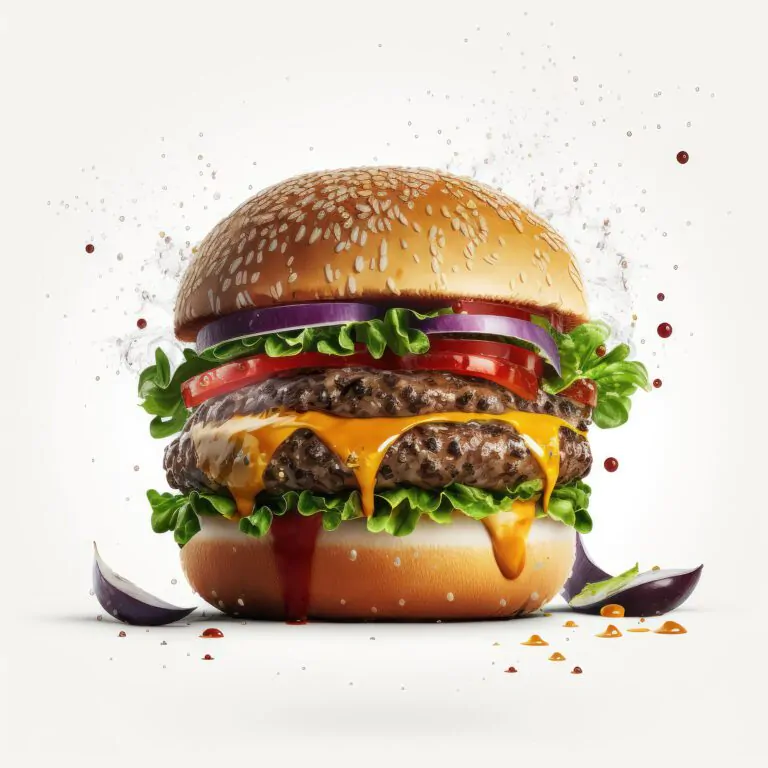
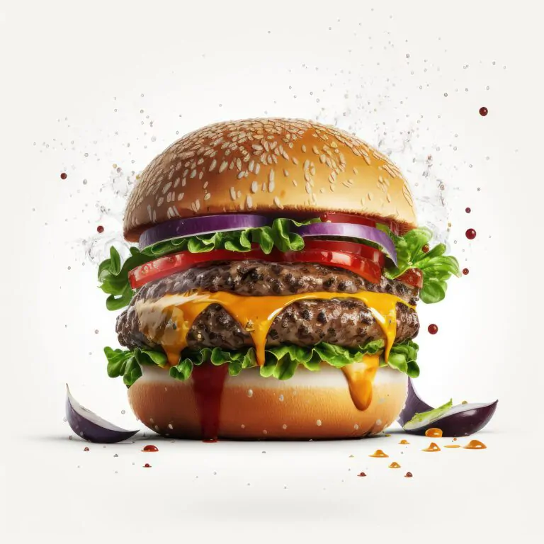

Publica do em Lanchonete BurgX
 

Se voc√™ √© fã de hambúrguer artesanal, prepare-se para se apaixonar. Um pão macio, carne suculenta no ponto certo, bacon crocante e muito queijo derretendo a cada mordida. ü§§

Imagina dar a primeira mordida em um pão macio, recheado com carne artesanal suculenta, queijo cheddar derretido e aquele bacon crocante irresist√≠vel. ü§§